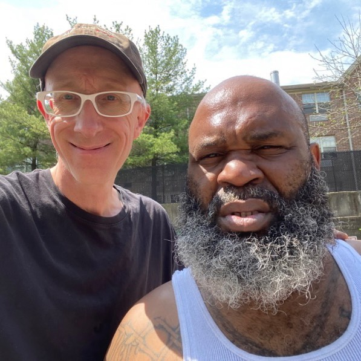

Timeline photos
This is my friend Hermain - “Q” or “Nephew” or “Main”.
He was shot and killed last night not far from where this picture was taken. This is land owned by our church. The Church of the Nomadic Spirit.
Hermain doesn’t live at our house. But he would often come over. Every week he helped with the trash at our house. I usually try to give him a little money. This week I was out of money. But he helped anyway.
I once asked Hermain what he wanted to do next in his life. He said he wanted to serve breakfast for local kids. He said that he had done a lot of bad in the world. Now he wanted to do some good.
I’ve been getting more involved with homeless people who are involved in gangs. I just keep digging deeper and deeper to see where the rock bottom of suffering is in Akron. I can’t find it. The tragedy and extreme suffering of our city has no end. It’s a bottomless pit of despair, anguish and brutality.
There is a lot of talk about who did it. I think they’ll find the killer.
Black or White: everyone says Hermain is a good guy and did not deserve this.
Place: Middlebury (41.071918, -81.488393)
Address: Middlebury, OH 44305